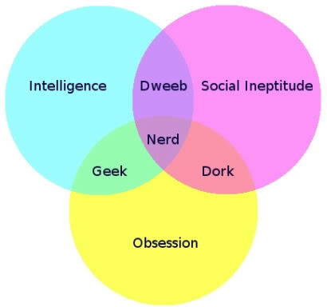

Welcome To:
Computer Programming
comp-prog/lecture_0
Matt Gottsacker
Computer Programming
Marquette University High School
Last modified: 08.20.2019
About me
-
I graduated from Saint Louis University in May 2019.
-
Major: Computer Science
-
Minor: English
-
I have interned at software companies and at research labs.
-
I have experience coding in multiple programming languages.
-
Java, Python, JavaScript, R, C, C++, X86 Assembly, Go
-
I am most interested in the field of Human-Computer Interaction.
Nerd/Geek/Dork/Dweeb

Hypothesis: We are all nerdy about something.
About you
-
Name
-
Grade level
-
Why did you sign up for this class?
-
What are your technical or computer science-related interests?
-
What are your non-technical interests or hobbies?
-
What are you a nerd about?
Course pre-requisites: Mathematics
-
You must be in advanced or accelerated math
-
The following classes are NOT advanced or accelerated:
-
Geometry with Mrs. Kresovic
-
Algebra 2 w/ Mr. Cleary
-
Precalculus w/ Mrs. McDevitt
Course pre-requisites: Computers
-
You are required to have your own computer for this course. This is listed in the course handbook as a requirement for this course.
-
You are also required to keep this computer in working condition throughout the semester. A damaged or inoperable computer is not an excuse to miss deadlines.
-
A few (2) computers are available for students to use in class if they are unable to purchase a computer.
-
This requirement can be satisfied by the cheapest computer you can find. Windows, Mac OS X, and Linux work best. Avoid Chromebooks, if possible.
Course material
-
I assume you know nothing about computer programming (but I assume you are a reasonably good critical thinker).
-
I base my presentations and assignments off of the course textbook, with some modifications to exercises and editions to outdated content.
-
My goal is to get through 6 chapters of the text.
-
The text has 16 chapters and you are welcome to work ahead if you like.
-
However, you cannot use future material to make current problems easier (i.e. using chapter seven techniques to solve a chapter five problem).
Course objectives
-
Collaborative
-
Innovative
-
Creative
-
Interdisciplinary
-
Ethical
Course mechanics: in class
-
Notes on the readings
-
Programming examples and exercises
-
Programming assignments (solo and group)
-
Unit quizzes
Course mechanics: website
-
Everything will be posted online.
Code example
You may see code in the lectures in this format:
public class Lecture_0 {
public static void main(String[] args) {
System.out.println("I love computer programming!");
}
}
Code example
Or, you may see links to OnlineGDB that you can compile and run from their website.
For next class:
-
Google form about you.
-
Install JDK and Geany via the links I share with you.
By Friday, 08.23.19:
-
Read chapter 1 of the textbook.